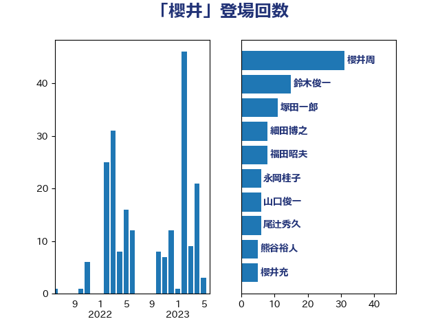

単語「櫻井」

| 櫻井周 | 立憲民主党 | 31 回 |
| 鈴木俊一 | 自由民主党 | 15 回 |
| 塚田一郎 | 自由民主党 | 11 回 |
| 細田博之 | 自由民主党 | 8 回 |
| 福田昭夫 | 立憲民主党 | 8 回 |
| 永岡桂子 | 自由民主党 | 6 回 |
| 山口俊一 | 自由民主党 | 6 回 |
| 尾辻秀久 | 無所属 | 6 回 |
| 熊谷裕人 | 立憲民主党 | 5 回 |
| 櫻井充 | 自由民主党 | 5 回 |
| 根本匠 | 自由民主党 | 4 回 |
| 豊田俊郎 | 自由民主党 | 3 回 |
| 藤巻健太 | 日本維新の会 | 3 回 |
| 山本順三 | 自由民主党 | 3 回 |
| 嘉田由紀子 | 無所属 | 3 回 |
| 上野賢一郎 | 自由民主党 | 3 回 |
| 黄川田仁志 | 自由民主党 | 2 回 |
| 青山周平 | 自由民主党 | 2 回 |
| 関口昌一 | 自由民主党 | 2 回 |
| 野田佳彦 | 立憲民主党 | 2 回 |
| 谷公一 | 自由民主党 | 2 回 |
| 藤岡隆雄 | 立憲民主党 | 2 回 |
| 牧島かれん | 自由民主党 | 2 回 |
| 滝波宏文 | 自由民主党 | 2 回 |
| 浅田均 | 日本維新の会 | 2 回 |
| 末松義規 | 立憲民主党 | 2 回 |
| 斉藤鉄夫 | 公明党 | 2 回 |
| 後藤茂之 | 自由民主党 | 2 回 |
| 岡本三成 | 公明党 | 2 回 |
| 小田原潔 | 自由民主党 | 2 回 |
| 小林鷹之 | 自由民主党 | 2 回 |
| 古賀之士 | 立憲民主党 | 2 回 |
| 伴野豊 | 立憲民主党 | 2 回 |
| 中川正春 | 立憲民主党 | 2 回 |
| 鶴保庸介 | 自由民主党 | 1 回 |
| 鬼木誠 | 立憲民主党 | 1 回 |
| 高橋克法 | 自由民主党 | 1 回 |
| 高市早苗 | 自由民主党 | 1 回 |
| 馬淵澄夫 | 立憲民主党 | 1 回 |
| 酒井庸行 | 自由民主党 | 1 回 |
| 赤羽一嘉 | 公明党 | 1 回 |
| 米山隆一 | 立憲民主党 | 1 回 |
| 福島みずほ | 社会民主党 | 1 回 |
| 福山哲郎 | 立憲民主党 | 1 回 |
| 石井準一 | 自由民主党 | 1 回 |
| 渡辺創 | 立憲民主党 | 1 回 |
| 海江田万里 | 立憲民主党 | 1 回 |
| 浅野哲 | 国民民主党 | 1 回 |
| 森屋宏 | 自由民主党 | 1 回 |
| 松村祥史 | 自由民主党 | 1 回 |
| 松本剛明 | 自由民主党 | 1 回 |
| 松原仁 | 立憲民主党 | 1 回 |
| 末松信介 | 自由民主党 | 1 回 |
| 木原誠二 | 自由民主党 | 1 回 |
| 徳永久志 | 立憲民主党 | 1 回 |
| 平口洋 | 自由民主党 | 1 回 |
| 山岸一生 | 立憲民主党 | 1 回 |
| 室井邦彦 | 日本維新の会 | 1 回 |
| 大西英男 | 自由民主党 | 1 回 |
| 大塚耕平 | 国民民主党 | 1 回 |
| 吉田宣弘 | 公明党 | 1 回 |
| 吉田はるみ | 立憲民主党 | 1 回 |
| 住吉寛紀 | 日本維新の会 | 1 回 |
| 伊藤孝恵 | 国民民主党 | 1 回 |
| 三上えり | 立憲民主党 | 1 回 |